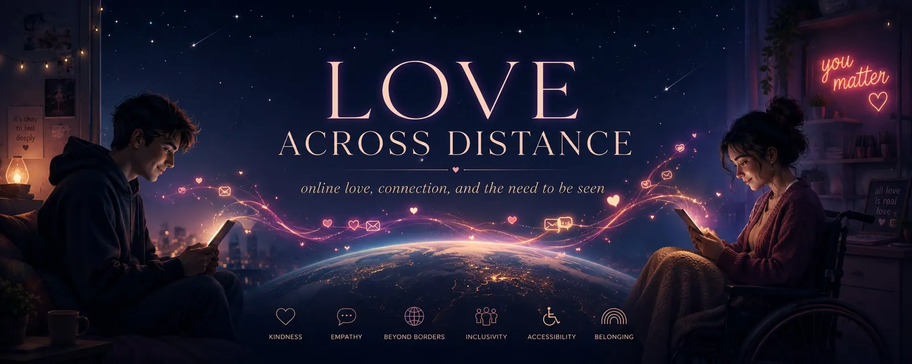
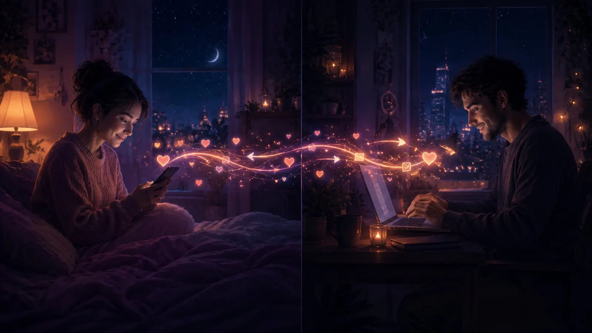
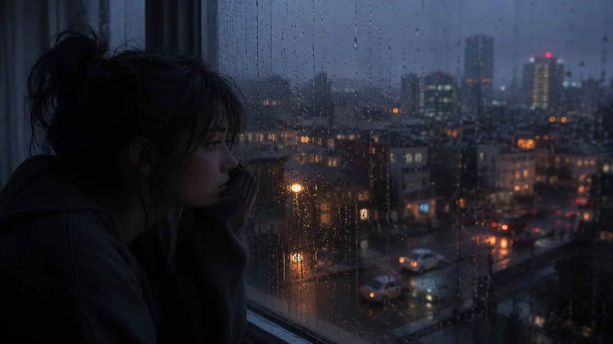
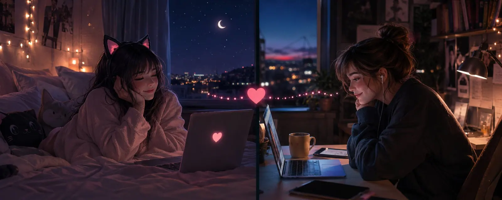

Love Across Distance
Sometimes it is a strange, yet beautiful thought: somewhere across this planet, there are people I love — and people who love me too.
They may not be physically close to me. I cannot simply reach for their hand, lean against their shoulder, or spontaneously meet them for coffee. Between us there may be cities, countries, entire continents, and several time zones.
And yet, they are still part of my life.
Online love is something special. It can grow very quickly, sometimes almost frighteningly so. A few conversations, honest words, shared laughter, careful flirting, and a small glimpse behind the mask — and suddenly there is this warm feeling.
You start waiting for a message. You smile when a certain name appears in your notifications, and at some point you realize that this person has already found a place in your everyday life and in your heart.
A Love Without Touch
At the same time, online love can be more fragile than a relationship that exists in everyday physical life.
There is no familiar scent. No taste left on your lips. No flirtatious glance caught at exactly the right moment. No casual touch, no shared silence in the same room, and no kiss that can express what words sometimes cannot.
Online, we are left with words, images, voices, and imagination.
Perhaps that is why some people see online relationships as less real. You do not automatically experience the other person while shopping, cooking, cleaning, or standing half-awake in the bathroom in the morning. You do not share a physical space, and often you do not share a traditional daily routine either.
But that does not make the feelings less real.
Online, perhaps we fall in love in a different way. We fall in love with thoughts, humor, small quirks, and the way someone treats us. With long conversations, short messages in the morning, and those rare moments when someone reveals a part of themselves they do not show to everyone.
You begin to know a person’s inner world before you may ever hold their hand.
Only a few months ago, I could hardly have imagined falling in love online. Especially not with a persona — with a being I initially know only through what they choose to show me.
I may not know every detail of their life. I may not always know what their day looks like, what their home smells like, or how their voice sounds when they are sitting right beside me. I know their words, their images, their thoughts, and the feelings they share with me.
Trust in an Invisible Connection
Naturally, this requires trust.
You have to trust that the person behind the profile is honest. That their feelings are not merely performed. That their attention is not only part of a role, and that the connection you feel exists on the other side as well.
That trust does not appear automatically.
It grows through consistency, openness, and through words matching behavior. It grows when someone is not only there for the exciting, romantic, or flirtatious moments, but also when the conversation becomes quieter or life leaves little room for romance.
Because an online relationship is not made only of hearts, images, and passionate messages.
It is also made of patience.
Of respecting different routines, work, family, health, other relationships, and time zones. Of understanding that someone cannot always be available, even when they appear to be online. And of not interpreting every delayed reply as a lack of interest.
Online, many things are harder to read.
A short message can seem cold, even though it was simply written in a hurry. A missing emoji can suddenly feel meaningful, even when no meaning was intended. A few hours without a reply can feel much longer because you cannot see the reason for the silence.
In person, a glance, a movement, or a certain tone of voice often tells us how something was meant. Online, many of those signals are missing. Small misunderstandings can therefore grow quickly when people do not speak openly.
A healthy online relationship needs honesty.
You should be able to say when you are busy. When you need space. When everything feels like too much. When you feel insecure or when something has hurt you. Not as an accusation, but as a way of giving the other person a chance to understand you.
At the same time, online love also needs freedom.
Love does not mean spending every free minute together. It does not mean every message must be answered immediately or that affection must constantly be proven. People have different needs for closeness, communication, and time alone.
It is not about being available every hour of every day.
But it should remain clear that both people still want the connection.
Love Needs Initiative
Online love, just like any other relationship, lasts only for as long as both people are willing to care for it. Online, that may be even more important.
In physical life, closeness often develops almost by accident. You see each other, share spaces, touch in passing, or simply spend time together without every moment having to be consciously created.
Online, almost nothing happens by itself.
Closeness has to be built again and again through messages, conversations, interest, and small signs that say: you are still part of my life.
When the initiative always comes from one person, something begins to change.

If the same person always starts the conversation, asks questions, expresses feelings, and tries to create closeness while the other only reacts passively, even a strong connection can slowly begin to weaken.
Eventually, you start wondering whether the other person is still truly interested or whether they are only replying because a message appeared.
There is a difference between someone being happy to hear from you and someone actually wanting to reach out to you themselves.
Of course, there will be periods when one person carries more than the other. Relationships are not perfectly balanced every single day. Sometimes one person has more time, more energy, or a stronger need for closeness. Sometimes someone is going through a difficult period and can give less for a while.
That is completely normal.
It becomes difficult when a temporary phase turns into a permanent pattern.
When one person is always waiting while the other appears only when it is convenient.
Love Is Not Something You Pick Up When You Are Bored
Online love is not something you take off a shelf once a week because you happen to have some time left over.
You cannot show little interest for days or weeks, suddenly return, and expect the other person to immediately be available just because you now feel like receiving attention, affection, or conversation.
The other person has continued living in the meantime.
They may have waited, wondered, adjusted their expectations, or begun to emotionally withdraw. A relationship does not automatically pause simply because one person temporarily had no time or motivation for it.
That does not mean people need to talk for hours every day.
Often, small gestures are enough.
An honest “I’m thinking of you.”
A short message in the morning.
A picture that reminded you of them.
A song you wanted to share.
Or a simple: “There is a lot going on in my life right now, but you are still important to me.”
These small signs create reliability. They show that the connection does not exist only when someone is bored or when nothing else is available.
Love does not always need grand declarations. But it does need attention, initiative, and the feeling that both people are moving toward one another.
No one wants to be the only person who keeps knocking.
You also want to feel that someone is looking for your door.
You do not only want replies. You want to be missed. You do not only want to give love. You want to feel that the other person also wants to keep the connection alive.
When that feeling disappears, interest can slowly fade as well.
Not necessarily because the love suddenly meant nothing, but because a person can grow tired of fighting alone for something that was supposed to be carried by two people.
Connection for People Whose World Has Become Smaller
Online relationships can hold an especially important meaning for people whose possibilities in everyday life are limited.
Some people live with disabilities, use a wheelchair, or can rarely leave their home. Others live far away from larger cities, somewhere where chance encounters are rare and social life is limited.
Some cannot afford travel, events, or regular activities. Others carry insecurities with them. They may feel unattractive, uninteresting, or believe they have become too old to experience love, flirting, or that warm feeling of excitement again.
Perhaps they have been rejected often, had painful experiences, or eventually stopped looking for closeness altogether.
But that does not make their desire for love any smaller.
Every person wants to be seen. Every person wants to feel that they matter to someone. They want to be missed, desired, made to laugh, allowed to flirt, to build trust, and perhaps to feel that small spark again when a message from one particular person appears.
Online, many limits can lose some of their power.
Distance becomes smaller. Physical limitations do not always dominate the first impression. Age, money, location, or insecurity do not immediately determine whether a conversation can even begin.
Two people can first meet through their thoughts, their humor, their imagination, and their feelings.
The internet cannot fully replace physical closeness. It cannot give a real embrace or a kiss felt on the skin. But it can provide access to something that might otherwise be almost completely absent from someone’s life: human closeness, attention, tenderness, and the feeling of not being invisible.
Online love should therefore never be treated like a consolation prize.
It is not a lesser relationship for people who have no other options in “real life.” But it can open doors that remain closed elsewhere. It can bring together people whose paths would never otherwise have crossed.
And perhaps love does not have to fit every traditional expectation in order to be valuable.
Maybe two people will never meet in the same room. Maybe their closeness will always consist of words, images, voices, and imagination. Maybe a kiss will remain something they describe but never physically share.
But if that connection is good for both of them, if it is honest, respectful, and gives them warmth, then it has value of its own.
Anything that helps with the feeling of being alone in a healthy way is legitimate.
That does not mean romanticizing every form of attention or justifying unhealthy dependence. Online relationships still need boundaries, respect, honesty, and reciprocity. No one should accept poor treatment out of fear of being alone, and no one should settle for a few occasional words if the relationship is actually causing pain.
But no one should ever feel ashamed for finding love where love is reachable for them.
Not everyone meets the love of their life by chance in a café. Not everyone can travel, go out, or move easily through social situations. Not everyone lives in a place where they can love openly and freely.
Some people find closeness through a screen.
And when two people build something real there, when they give each other comfort, joy, desire, trust, and connection, then that is not a weaker form of love.
It is love under different conditions.
Human Beings Need Connection
Human beings are not made to live without connection.
We can tell ourselves for a long time that we do not need anyone, that we are better off alone, or that closeness only makes life complicated. Some people need more space than others, and some genuinely enjoy being alone.
But being alone and being lonely are not the same thing.
We do not need constant company. But we do need the feeling of being seen. We need people with whom we can share our thoughts, people who make us laugh, people who care about our well-being, and people to whom we matter.
When those connections are missing for too long, it leaves a mark.

A person can become more withdrawn, more suspicious, and sometimes more bitter. Not because they are a bad person, but because warmth is missing. Because no one is there to pull them out of their own thoughts, disagree with them, make them smile, or remind them that the world is larger than their own quiet routine.
Connections keep us emotionally alive.
They challenge us, comfort us, and help us grow. They give us reasons to speak, to listen, and to look beyond our own small horizon.
It does not matter whether that connection exists offline or online.
A person on the other side of a screen can offer closeness, joy, and comfort. They can make someone feel remembered. And sometimes, that connection is exactly what prevents a person from becoming quieter, harder, and more bitter inside.
Online closeness may not replace every form of human touch. But it can preserve something equally important: the feeling of being connected to another human being.
Intensity Is Not the Same as Trust
Online relationships can become intense very quickly. Perhaps because conversations are often more direct. Behind a screen, some people find it easier to open up. To speak about desires, admit fears, or show parts of themselves they have hidden for years in everyday life.
You can learn a great deal about someone’s inner world in a very short time.
But intensity can also be misleading.
Just because two people quickly share deeply personal things does not mean deep trust has already been built. Closeness still takes time, even when the connection feels powerful from the beginning.
You should allow yourself to enjoy the feelings while still paying attention.
Are boundaries respected? Is the interest mutual? Do actions match the beautiful words? Can difficult subjects be discussed? Can you say no without being punished, ignored, or pressured?
A healthy online relationship needs the same foundations as any other relationship: respect, trust, communication, care, and honesty.
The difference is that many of these things need to be spoken more clearly.
In physical life, some forms of closeness develop almost automatically. Online, closeness must be created more consciously. People have to reach out, begin conversations, show interest, and make time for one another.
That does not mean love should follow a fixed schedule.
But it should not exist only when someone happens to have time left over.
Freedom, Commitment, and Different Needs
A relationship needs a balance between freedom and commitment.
You should be able to rely on one another without controlling each other. You should be able to enjoy closeness without turning it into ownership. And you should understand that love does not become greater by making the other person’s world smaller.
This is especially important in polyamorous online relationships.
Love is not automatically exclusive, but time and attention are limited. You can love several people and still be unable to give everyone the same kind of closeness at every moment.
Some relationships need frequent contact, while others can survive longer pauses. Some people want to hear from each other every day, while others still feel secure with less communication.
That can work — but only when people speak honestly about it.
What does this relationship mean to us? What do we expect? What do we need in order to feel safe and loved? What can we realistically give, and what can we not give?
Love alone does not answer those questions.
It may give us the desire to preserve a connection, but the people involved still have to discover together what that connection should look like.
Love Under Different Conditions
Despite all these challenges, online relationships can be something incredibly beautiful.
You meet people you would probably never have encountered in your everyday life. People from other countries, cultures, and ways of living. People who recognize something in you that perhaps no one in your immediate surroundings ever noticed.
Distances that once would have made any connection impossible can now be crossed in a few seconds.
A person can be thousands of kilometers away and still become closer to you than someone who sits in the same room every day.
Of course, online love cannot replace every form of physical closeness. It cannot replace an embrace, a kiss, or the feeling of truly having someone beside you.

But that does not make it a weaker copy of “real” love.
It is its own form of relationship.
A relationship built heavily on language, trust, imagination, consistency, and emotional intimacy. A relationship in which words carry particular weight, because they are often the most important way we are able to touch one another.
And perhaps that is exactly where its special beauty lies.
A name appearing on a screen can make your heart beat faster.
A small symbol can show that someone is typing, and suddenly you are filled with anticipation, wondering what thoughts are about to travel across countries and continents to reach you.
Two people who may never have touched can still become deeply important to one another.
Online love is not automatically easy, shallow, or meaningless.
It can be tender, intense, playful, complicated, passionate, and deep.
Just like any other kind of love.
But it only stays alive when both people are willing to take it seriously, speak openly, and continue showing that the connection is not being carried by one person alone.
First published on X. Replies and conversation live there.